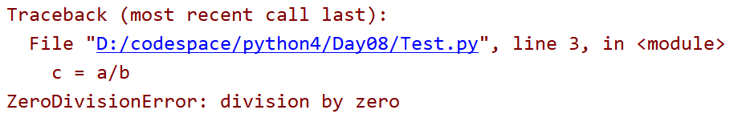
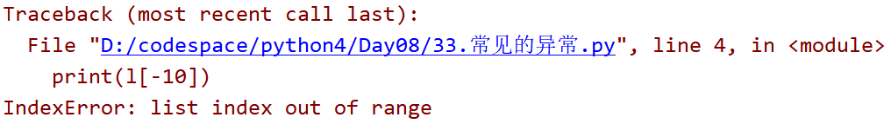
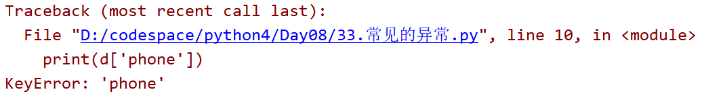
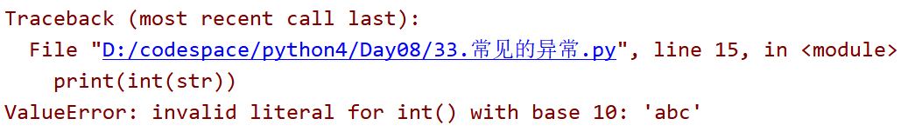
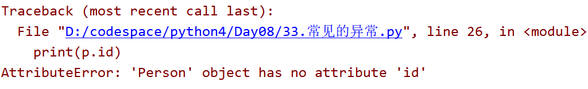
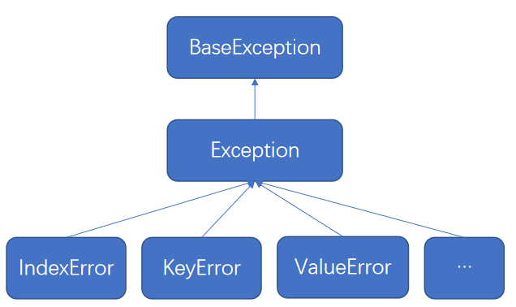

三、异常
什么是异常?
程序在运行过程中，发生了未知的事件，影响到了程序的正常运行
异常是一种事件
异常会影响到程序正常运行
1. 第一个异常
| a = 10
b = 0
c = a/b
print(c)
|
运行程序:

出现了ZeroDivisionError异常
出现异常会造成程序停止
2. 异常捕获
使用try except捕获异常
代码:
| try:
result = a/b
print('没有异常',result)
except:# 如果代码有异常会执行 ,没有异常并不会执行
print('出现了异常')
|
可以捕获异常的类型
| try:
result = a/b
print('没有异常',result)
except Exception as error:# 如果代码有异常会执行 ,没有异常并不会执行
print('出现了异常',error)
|
3. finally
try语句中使用finally,finally中代码不论有没有出现异常都会执行
格式:
| try:
逻辑代码
finally:
无论是否出现异常，都会执行
|
| try:
a = 1 / 0
finally:
print(“hello”)
|
程序出现异常也会执行finally中的代码
4. try except finally语法
格式:
| try:
逻辑代码
except Exception as error:
print(error)
finally:
无论是否出现异常，都会执行
|
1
2
3
4
5
6
7
8
9
10
11
12
13
14 | f = open('a.txt','w')
f.write('hello')
try:
# 出现异常
a = 10
b = 0
re = a/b
except:
print('出现异常')
finally: # 即使程序出现异常 finally里面的代码也可以继续执行
# 必须要关闭 内存泄漏
f.close()
print('文件已经关闭了')
|
无论文件是否操作失败,最终都需要关闭文件
所以把文件关闭的方法放到finally中
5. try except else finally语法
格式:
| try:
逻辑代码
except Exception as error:
print(error)
else:
没有出现异常的逻辑
finally:
无论是否出现异常，都会执行
|
| a = 10
b = 0
try:
result = a/b
print(result)
except:
print('出异常')
else:
print('没有出异常')
finally:
print('最终执行的代码')
|
6. 常见的异常类型
IndexError
数组下表越界异常
| # 角标越界异常
l = [10, 20, 30]
print(l[-10])
|

KeyError
字典中键不存在
| # KeyError 字典中 的键不存在
d = {'name':'张三','age':30}
print(d['phone'])
|

ValueError
值类型错误
| # ValueError 数据转换时出错
str = 'abc'
print(int(str))
|

AttributeError
对象中属性、函数不存在
| class Person:
def __init__(self):
self.name = '张三'
self.age = 30
p = Person()
print(p.id)
|

7. 自定义异常
除了系统已经定义好的异常,也可以自己定义异常
异常的继承关系
所有的异常都继承自Exception

自定义异常的格式:
| class 自定义异常名(Exception):
def __init__(self, msg):
self.msg = msg
def __str__(self):
return self.msg
|
代码:
1
2
3
4
5
6
7
8
9
10
11
12
13
14
15
16
17
18
19
20 | class MyException(Exception):
def __init__(self,msg):
'''
异常的提示文字
:param msg:
'''
self.msg = msg
def __str__(self):
return self.msg
a = 10
b = 0
try:
if b==0:
raise MyException('出现了0')
result = a/b
print(result)
except MyException as error:
print('捕获异常',error)
|
raise的作用是抛出异常
抛出异常如果没有通过try except处理,程序会停止
8. 异常案例
异常嵌套
| try:
a = 1 / 0
try:
int(“abc”)
except Exception as error:
print(error)
except Exception as error:
print(error)
|
try中可以再处理异常
如果里层代码出现异常,则会执行里层的except
多重捕获
| try:
a = 1 / 0
b = [1,2]
b[2]
except IndexError as error:
print(“indexerror 错误逻辑”)
except Exception as error:
print(error)
|
可以通过多个except捕获不同的异常分别处理
返回值问题
1
2
3
4
5
6
7
8
9
10
11
12
13
14
15 | import random
def hello():
try:
b = [1]
b[random.randint(0, 1)]
print("--0")
return 0
except Exception as error:
print("--1")
return 1
finally:
print("--2")
return 2
|
如果finally中有return语句,则返回的结果为finally中的return数据